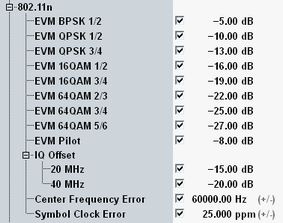

IEEE defines EVM limits from -28 dB to -5 dB, depending on the modulation type and coding rate.
For the frequency error and the symbol clock error, IEEE specifies limits in ppm of the carrier frequency and depending on the frequency band: ±20 ppm for the 5 GHz band and ±25 ppm for the 2.4 GHz band. Example: For channel 36 of the 5 GHz band, the limit is 20 ppm of 5180 MHz = 103.6 kHz.
Characteristics | Refer to IEEE 802.11-2012, section... | Specified limit |
|---|---|---|
EVM (RMS) | 20.3.20.7.3 Transmitter constellation error | < -5 dB (BPSK, 1/2) < -10 dB (QPSK, 1/2) < -13 dB (QPSK, 3/4) < -16 dB (16-QAM, 1/2) < -19 dB (16-QAM, 3/4) < -22 dB (64-QAM, 2/3) < -25 dB (64-QAM, 3/4) < -27 dB (64-QAM, 5/6) |
I/Q offset | 20.3.20.7.2 Transmit center frequency leakage | < -15 dB (20 MHz) < -20 dB (40 MHz) |
Frequency error | 20.3.20.4 Transmit center frequency tolerance | < ±20 ppm (5 GHz band) < ±25 ppm (2.4 GHz band) |
Symbol clock error | 20.3.21.6 Symbol clock frequency tolerance | < ±20 ppm (5 GHz band) < ±25 ppm (2.4 GHz band) |
The configuration dialog allows you to set these limits as absolute values:
